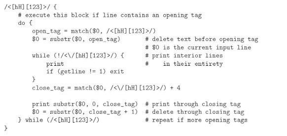

Created: 2023-10-31 mar 10:08
Nombres de archivo y expansión de variables
for fig in *.eps
do
ps2pdf $fig
done
Tests, consultas y condiciones
for fig in *.eps
do
target=${fig%.eps}.pdf
if [ $fig -nt $target ]
then
ps2pdf $fig
fi
done
for fig in *; do echo ${fig%.*}; done | sort -u | wc -l
Para crear una lista de figuras
for fig in *; do echo ${fig%.*}; done | sort -u > all_figs
Para imprimir la lista de figuras todas en una linea separadas por espacio
tr '\n' ' ' < all_figs
comillas simples inhiben la expansión y las dobles tratan el contenido como una palabra simple:
foo=bar
single='$foo'
double="$foo"
echo= $single $double
imprimirá "$foo bar"
lista de comandos encerrados entre paréntesis son pasados a un subshell para evaluación
for fig in $(cat my_figs); do ps2pdf ${fig}.eps, done
definir funciones y usarlas como predefinidas
function ll () {
ls -l "$@"
}
se pueden ejecutar comandos shell desde un archivo script
. my_script
o como un programa ejecutable con el encabezado
#!/bin/bash
sed
script en sed para extraer encabezados de un archivo html.
Awk

script en awk para extraer encabezados de un archivo html.
trabajaba en la NSA
Script en Perl para forzar la salida de procesos errantes.
#!/usr/bin/perl
print "Content-type: text/html\n\n";
$host = 'hostname'; chop $host;
print "<HTML>\n<HEAD>\n<TITLE>Status of ", $host,
"</TITLE>\n</HEAD>\n<BODY>\n";
print "<H1>", $host, "</H1>\n";
print "<PRE>\n", 'uptime', "\n", 'who';
print "</PRE>\n</BODY>\n</HTML>\n";
<HTML>
<HEAD>
<TITLE>Status of <?php echo $host = chop('hostname') ?></TITLE>
</HEAD>
<BODY>
<H1><?php echo $host ?></H1>
<PRE>
<?php echo 'uptime', "\n", 'who' ?>
</PRE>
</BODY>
</HTML>
una pagina web interactiva JavaScript
Created by yjwen.